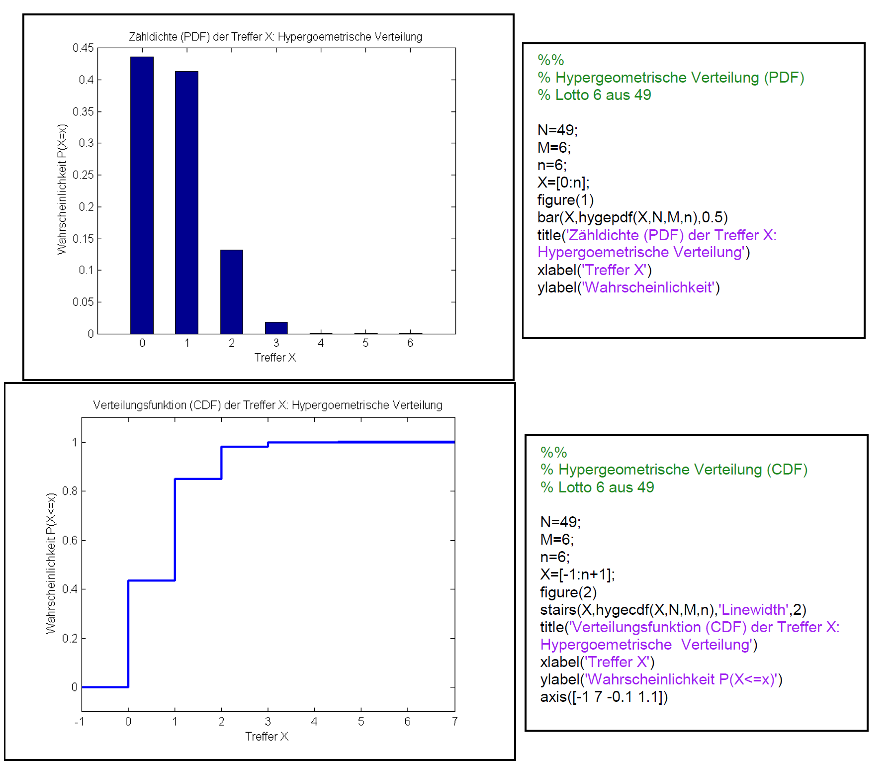

Wir betrachten eine Urne mit \(N \) Objekten. Darunter sind \(M \) Objekte einer bestimmten Sorte, wir nennen sie Sorte \(M \), die Merkmalsträger und \(N-M \) andersartige Objekte. Es wird zufällig eine Stichprobe von \(n \) Objekten aus der Urne entnommen.
Das Ziehen kann auf einmal passieren oder auch nacheinander, wichtig aber ist, dass ohne Zurücklegen der Objekte gezogen wird. Mit der Zufallsvariable \(X \) sei die Anzahl der Merkmalsträger in
der Stichprobe bezeichnet. Die Verteilung von \(X \) heisst hypergeometrische Verteilung. Mit Binomialkoeffizienten lässt sich die Anzahl der relevanten Ergebnisse abzählen und die Zähldichte (PDF) der Zufallsvariablen \(X \) elegant aufschreiben.
Die Anzahl der Möglichkeiten genau \(k \) Merkmalsträger aus insgesamt \(M \) Merkmalsträgern zu ziehen ist
\( \left( \begin{array}{l} M\\ k \end{array} \right) = \frac{{M!}}{{(M - k)! \cdot k!}} \)
Eine Ziehung besteht aus \(n \) Objekten. Um insgesamt genau \(n \) Objekte zu erhalten müssen noch \(n-k \) Objekte gezogen werden, welche keine Merkmalsträger sind. Dafür gibt es
\( \left( \begin{array}{l} N - M\\ n - k \end{array} \right) \)
Möglichkeiten. Insgesamt gibt es
Möglichkeiten für eine Stichprobe mit \(k \) Merkmalsträgern und \(n-k \) Objekten ohne Merkmal. Die Wahrscheinlichkeit für genau \(k \) Merkmalsträger in der Stichprobe von \(n \) Objekten ist demnach:
\( P(X = k) = \frac{{\left( \begin{array}{l} M\\ k \end{array} \right) \cdot \left( \begin{array}{l} N - M\\ n - k \end{array} \right)}}{{\left( \begin{array}{l} N\\ n \end{array} \right)}} \)
\( P(X = k) = \frac{{\left( \begin{array}{l} 6\\ k \end{array} \right) \cdot \left( \begin{array}{l} 43\\ 6 - k \end{array} \right)}}{{\left( \begin{array}{l} 49\\ 6 \end{array} \right)}} \)
Beispielsweise ist die Wahrscheinlichkeit für mindestens 4 richtige Zahlen:
\( \begin{array}{ll} P(X \ge 4) &=& P(X = 4) + P(X = 5) + P(X = 6) \\ & = & \frac{1}{{\left( \begin{array}{l} 49\\ 6 \end{array} \right)}} \cdot [\left( \begin{array}{l} 6\\ 4 \end{array} \right) \cdot \left( \begin{array}{l} 43\\ 2 \end{array} \right) + \left( \begin{array}{l} 6\\ 5 \end{array} \right) \cdot \left( \begin{array}{l} 43\\ 1 \end{array} \right) + \left( \begin{array}{l} 6\\ 6 \end{array} \right) \cdot \left( \begin{array}{l} 43\\ 0 \end{array} \right)] \\ & \approx & {\rm{9}}{\rm{.8714}} \cdot {\rm{1}}{{\rm{0}}^{ - 4}} \end{array} \)
Unter 1000 Rateversuchen wird somit ein Versuch mit mindestens 4 richtigen Zahlen erwartet. Wenn man die CDF der Verteilung zur Verfügung hat, wie z. B. in Matlab oder den Statistikpaketen des TR, so kann obige Wahrscheinlichkeit am besten über das Gegenereignis und die CDF \( F(k) = P(X \le k) \) der hypergeometrischen Verteilung berechnet werden.
\( P(X \ge 4) = 1 - P(X \le 3) = 1 - F(3) \approx {\rm{9}}{\rm{.8714}} \cdot {\rm{1}}{{\rm{0}}^{ - 4}} \)
In Matlab wäre das der Befehl 1-hygecdf(3,49,6,6).

Aufgabe 1
In einer Lostrommel befinden sich 250 Lose. Darunter sind 20 Gewinne. Sie greifen in die Lostrommel und ziehen 10 Lose. Wie gross ist die Wahrscheinlichkeit, dass Sie kein einziges Gewinnlos gezogen haben? Wie gross ist die Wahrscheinlichkeit, dass Sie mindestens 3 Gewinnlose haben?
Aufgabe 2 (Qualitätsprüfung)
Eine Lieferung besteht aus 500 gleichen Bauteilen. Lieferungen mit 10% oder mehr defekten Bauteilen sollen abgelehnt werden. Testverfahren: Eine Stichprobe von 16 Bauteilen wird entnommen. Wenn sich darunter mindestens ein defektes Bauteil befindet, wird die Lieferung abgelehnt. Behauptung: Dieses Verfahren ermöglicht es Lieferungen mit 10% oder mehr defekten Bauteilen mit 80 prozentiger Wahrscheinlichkeit zu erkennen. Man kann sagen: Mit diesem Verfahren werden rund 80 % der fehlerhaften Lieferungen erkannt und abgelehnt.
Aufgabe 3
Der Aufsichtsrat eines AKWs besteht aus 7 Personen, welche aus einem Kreis von 16 anerkannten Experten durch Losentscheid ausgewählt werden. Unter den 16 Experten sind 5 Mitglieder der Z Partei. Wie gross ist die Wahrscheinlichkeit, dass mindestens 4 Mitglieder der Z Partei in den Aufsichtsrat gewählt werden?